时钟问题可以看作是一个特殊的圆形轨道上两个人追及或相遇问题，不过这里的两个“人”分别是时钟的分针和时针．时钟问题有别于其他行程问题，是因为它的速度和总路程的度量方式不再是常规的米/秒或者千米/时，而是两个指针“每分钟走多少度”或者“每分钟走多少小格”．
【解题技巧】
1．解法一（分格方法）：时钟的钟面圆周被均匀分成60小格，每小格我们称为1分格．分针每小时走60分格，即一周；而时针只走5分格，故分针每分钟走1分格，时针每分钟走
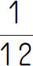
分格．2．解法二（度数方法）：从角度观点看，钟面圆周一周是360度，分针每分钟转
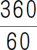
度，即6度，时针每分钟转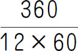
度，即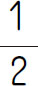
度．【基本公式】
把两指针在某一时刻时针所指方向作为角的终边，则m 时n 分这个时刻时针所成的角为
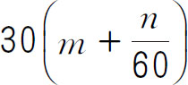
度，分针所成的角为6n 度，而这两个角度的差即为两指针的夹角．若用α表示此时两指针夹的度数，则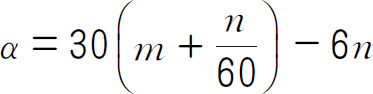
．考虑到两针的相对位置有前有后，为保证所求的角恒为正且不失解，我们给出下面的关系式：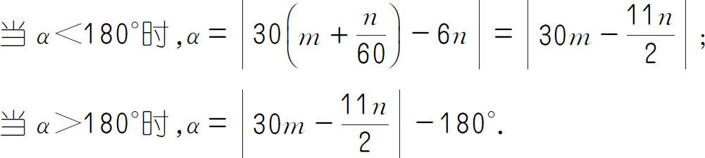
（第六届“迎春杯”决赛）从三点钟开始，分针与时针第二次形成30度角的时间是三点____分．
【答案】
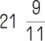
．【解析】 设三点x 分为所求时间，根据分针速度是时针速度的12倍，列方程12×（x -20）＝x ，解得
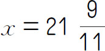
．【举一反三1】
在7点与8点之间（包含7点与8点）的什么时刻，两针之间的夹角为120°？
（第七届“华杯赛”初赛）时钟的时针和分针在6点钟反向成一直线，它们下一次反向成一直线是在什么时间？（结果取整数）
【答案】 7时5分27秒．
【解析】 将钟面沿时针或分针运动一周的轨迹分成60格，则分针1小时走60格，时针1小时走5格．当时针和分针下一次反向成一直线时，分针要比时针多走60格，需要的时间是60÷（60-5）≈1时5分27秒，即在7时5分27秒，时针和分针再次反向成一直线．
【举一反三2】
现在是11点整，再过几分钟，时针和分针第一次垂直？
（第二届“走美杯”初赛）有一只特殊的钟，分针每10分钟走1圈，分针走6圈时针才走1圈．开始时分针与时针重合，这称为第一次分针与时针在一条直线上．问分针与时针第六次在一条直线上需要多少分钟？
【答案】 30分钟．
【解析】 分针走6圈时针走1圈，分针比时针多走5圈，即60分钟分针比时针多走5圈，所以分针比时针多走1圈需要12分钟．分针与时针第6次在一条直线上时，分针比时针多走2.5圈，需要12×2.5＝30（分钟）．
【举一反三3】
实验室里有一只奇妙的钟，一圈有20格．每过6分钟指针跳一次，每跳一次就要跳8格，今天早上10点整，指针刚好从1跳到9，问昨天晚上10点时时针指向几？
（第十一届“迎春杯”初赛）一个挂钟每天慢30秒，一个人在3月23日12时校正了挂钟，到4月2日14时至15时之间，挂钟的时针与分针重合在一起时，标准时间应该是4月2日的___时___分___秒．
【答案】 14，15，57．
【解析】 从3月23日12时到4月2日12时共10天，挂钟显示11时55分．因为时针与分针两次重合时间为
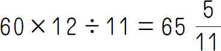
（分钟），所以从标准时间4月2日12时到所求时刻，挂钟走的时间为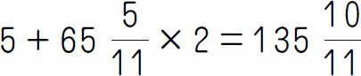
（分钟），相当于标准时间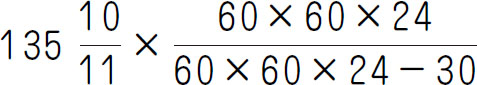
（分钟）≈2时15分57秒，则所求时刻为14时15分57秒．【举一反三4】
小明家的挂钟比标准时间每小时慢2分钟，小明早上7点上学时把钟对准，回家时挂钟正好指着12点．问：此时标准时间是多少？
1．10点钟以后，分针第三次与时针垂直的时刻是_____．
2．从时针指向4点开始，再经过多少分钟，时针正好和分针第一次重合？
3．在5时与6时之间，时针与分针在什么时刻相互垂直？
4．2时40分，时针与分针的夹角是多少度？
5．晚上7点到8点之间电视里播出一部动画片，开始时分针与时针正好成一条直线，结束时两针正好重合．这部动画片播出了多长时间？
6．4点过多少分时，时针与分针离“4”的距离相等，并且在“4”的两边？